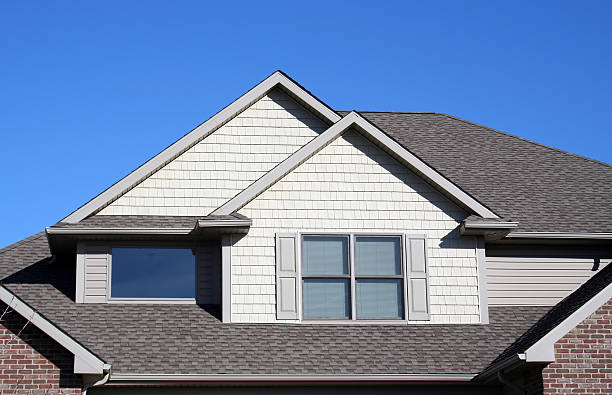

Home roofing with a calmer, more practical decision process.
Residential roofing in Newark often starts with uncertainty around leaks, age, damage, and timing. This page is built to make those next steps easier to sort through.
Roof inspections
Understand the condition of the roof before the issue grows.
Leak and wear repairs
Address localized problems before they reach interiors or framing.
Replacement planning
Move toward a full roof replacement when the existing system no longer supports smart repair.
Home protection strategy
Balance weather resistance, curb appeal, and long-term value.
What homeowners usually need
Residential roofing works better when the roof decision fits the home, not just the damage.
Some homes need repair, some are moving toward replacement, and some need a more complete upgrade strategy. The goal is to make the scope feel sensible for the age, layout, and condition of the property.
Leak-driven concerns
Interior staining, recurring moisture, and storm-related wear often push homeowners to act quickly.
Age-driven concerns
Older roofs may still be functioning, but visible aging can change the smarter long-term decision.
01
Inspect the full system
Visible shingles are only part of the story. Flashing, drainage, and surrounding wear matter too.
02
Compare the practical paths
A focused repair, a partial correction, or a broader replacement plan should be weighed against the home's actual condition.
03
Protect the home long-term
The right roofing choice should support weather protection, comfort, and future property value.
Common homeowner concerns
Signs homeowners usually want explained before choosing the next step.
Ceiling stains
Interior discoloration can point to an active leak or an older issue that keeps resurfacing.
Missing materials
Storms and age can loosen or remove sections that leave the roof exposed.
Visible aging
Curling, discoloration, and surface wear often signal that the roof is moving deeper into its life cycle.
Repeated patching
When repairs keep stacking up, replacement planning may become the stronger direction.
Final section
A fuller residential page helps the service feel more trustworthy and complete.
Homeowners usually want more than a short headline and a button. They want reassurance that the service covers inspections, repairs, replacement planning, materials, and the logic behind the recommendation.
Request Residential Roofing Help